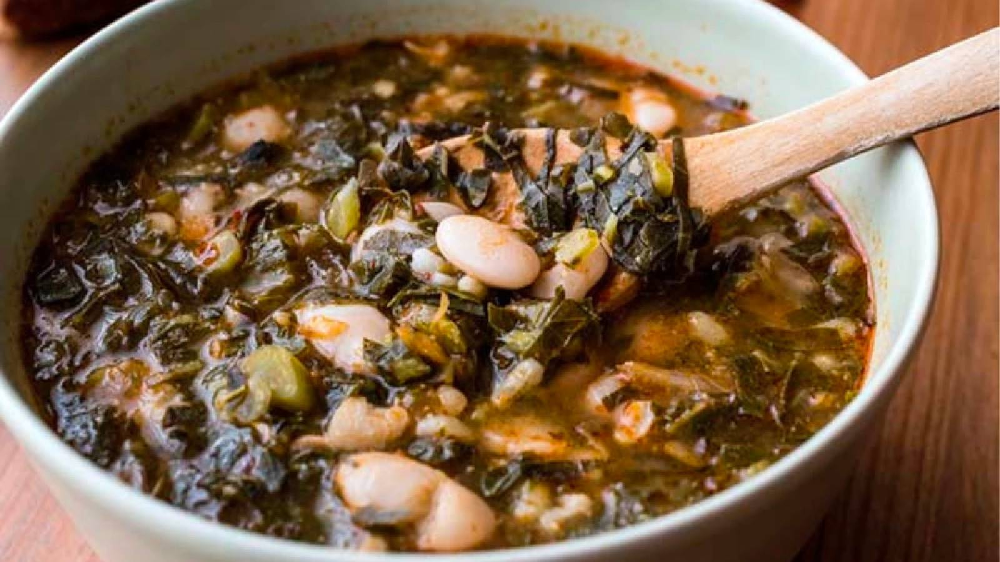

Karalahana Çorbası
Karalahana çorbası, yöre halkı tarafından özellikle kış aylarında tüketilen bir yemektir. Bunun nedeni ise kar suyunun yemeği daha lezzetli hale getirdiğine inanmalarıdır.

Tarif
Malzemeler
- 1 bağ karalahana
- 1 tatlı kaşığı tuz
- 5 su bardağı su (haşlamak için)
- 3 yemek kaşığı sıvı yağ
- 1 adet soğan
- 1 adet havuç
- 1 adet patates
- Yarım yemek kaşığı salça
- 1 tatlı kaşığı tuz
- 1 çay kaşığı pul biber
- 1 çay kaşığı karabiber
- 1 yemek kaşığı pilavlık bulgur
- Yarım çay bardağı mısır
- Yarım su bardağı barbunya
- 6 su bardağı sıcak su
- 2 yemek kaşığı mısır unu
- Yarım su bardağı su
Yapılışı
- Lahanayı yıkadıktan sonra ince ince doğrayarak tuzlu suda 15 dakika kadar haşlayıp süzelim ve bir kenarda bekletelim.
- Bir tencereye sıvı yağı alalım, ince yemeklik doğramış soğanları ekleyerek kavuralım.
- Küp küp doğranmış havuç ve patatesleri sırasıyla ekleyip 2-3 dakika kavuralım.
- Salçayı ve baharatları ekleyelim ve karıştıralım.
- Daha sonra haşlanmış ve suyu süzülmüş lahanaları tencereye koyup karıştıralım ve birkaç dakika daha kavuralım. Ocağımızın yüksek ateşte olmamasına dikkat edelim.
- Ardından bulgur, haşlanmış mısır ya da barbunyayı da koyarak karıştıralım.
- 6 su bardağı sıcak suyunu da ilave ederek karıştıralım ve yaklaşık 25 dakika kısık ateşte pişirelim.
- Pişmesine yakın mısır ununu bir kasede yarım bardak su ile pürüzsüz bir kıvam alana kadar karıştıralım ve çorbanın içerisine katalım ve 5 dakika daha pişirelim. Bir miktar kaynadıktan sonra ateşten alalım.
- Pişen çorbamızı kaselere koyarak servis edelim.
.png)